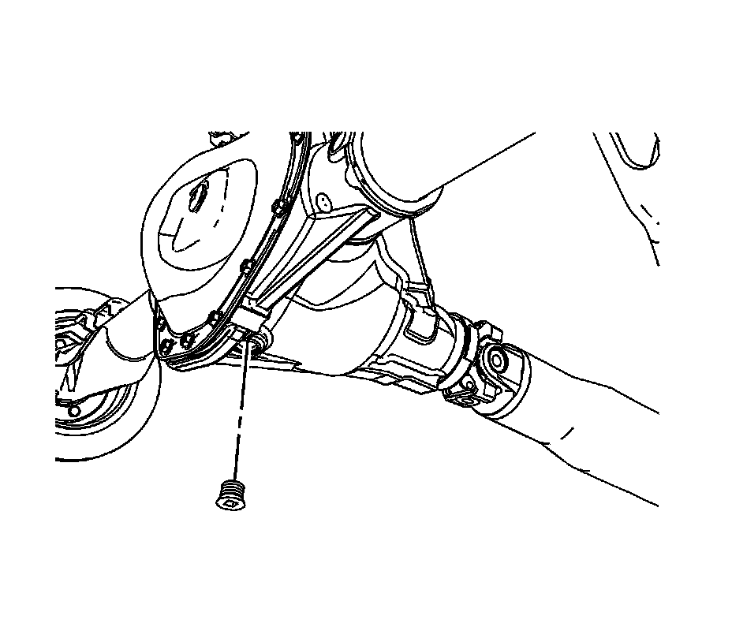
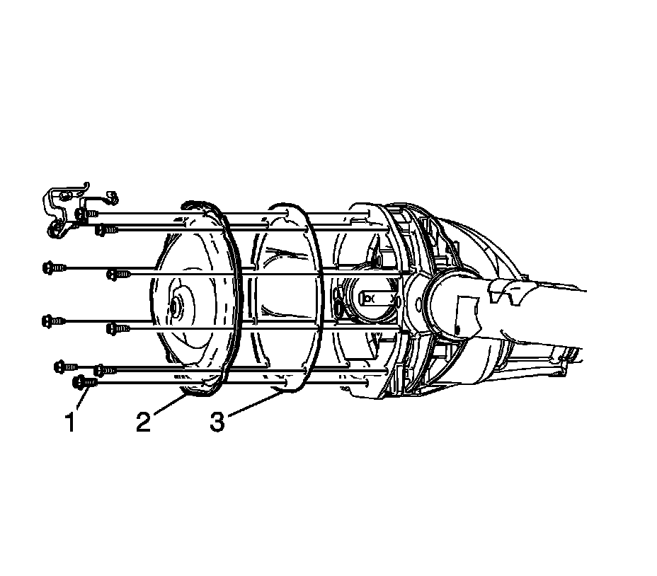

Differential Cover: Service and Repair
Rear Axle Housing Cover and Gasket Replacement
Removal Procedure
1. Raise and support the vehicle. Refer to Lifting and Jacking the Vehicle.

2. Drain the rear axle.
^ For the 8.6 inch axle, loosen the rear cover bolts to allow the fluid to drain from the rear axle.
^ For the 9.5 inch LD and 9.5 inch HD axles, remove the drain plug.

3. Remove the rear axle cover bolts (1).
4. Remove the axle housing cover (2).
5. Remove the gasket (3).
Installation Procedure
Important: The axle housing gasket is reusable. Replace only if damaged.
1. Install the axle housing cover gasket (3).
2. Install the axle housing cover (2).
Notice: Refer to Fastener Notice.
3. Install the mounting bolts (1).
Tighten the bolts to 40 N.m (30 lb ft).
4. Install the drain plug (9.5 inch axle only).
Tighten the drain plug to 33 N.m (24 lb in).
5. Fill the rear axle with fluid.
The lubricant level should be between 0-13 mm (0-0.50 inch) below the fill plug opening.
6. If the level is low, add lubricant until the level is even with the bottom of the fill plug opening. Use the proper fluid, refer to Fluid and Lubricant Recommendations.
7. Lower the vehicle.